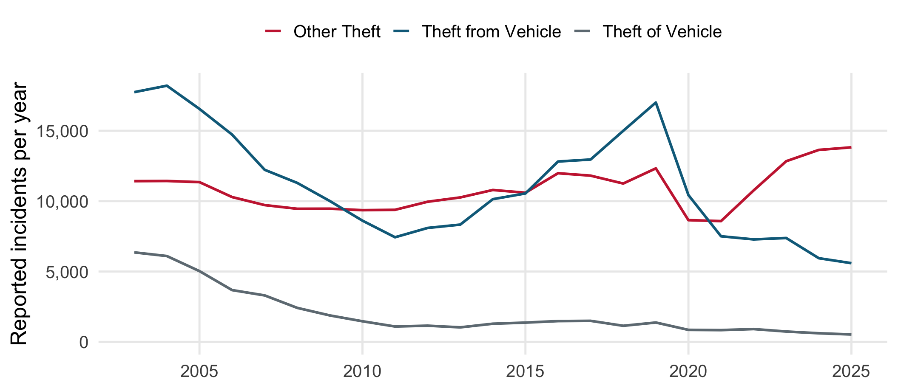
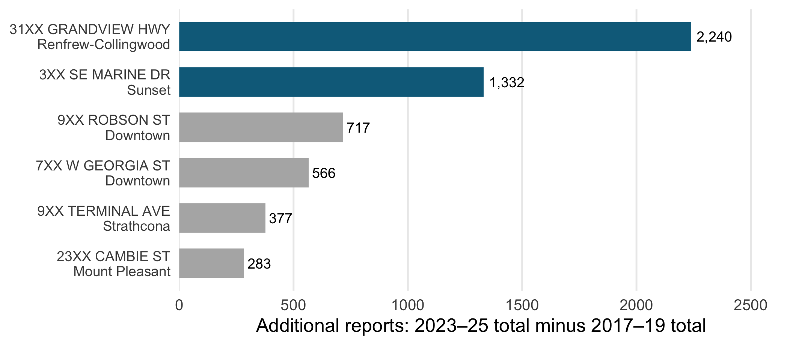
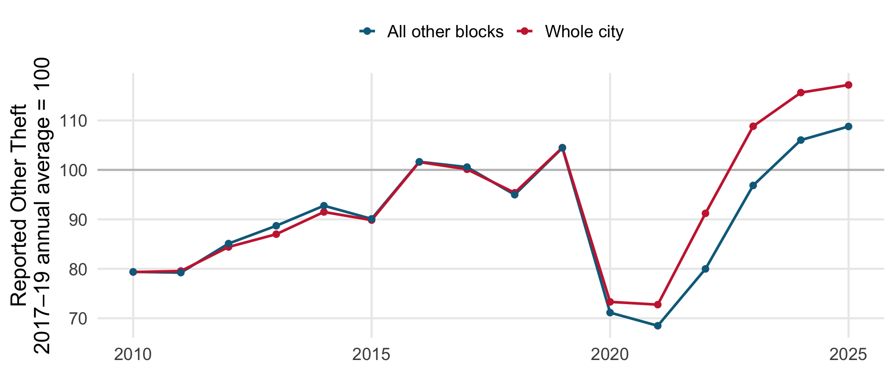
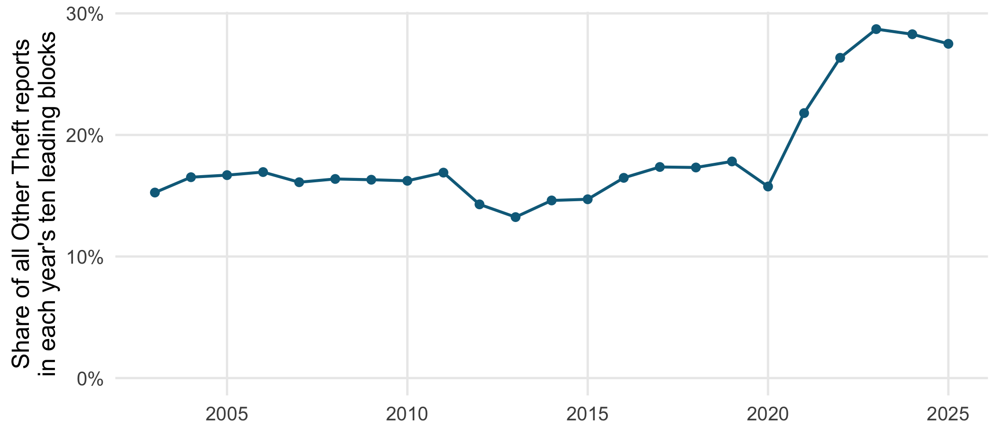

library(tidyverse)library(ggrepel)theme_set(theme_minimal(base_size =19) +theme(legend.position ="top", legend.title =element_blank(),panel.grid.minor =element_blank()))# Public incident records, with unused fields removed. Provenance and the# extraction code are in docs/example_data/README.md and prepare_snapshots.R.crime <-read_csv("docs/example_data/vancouver_crime_2003_2025.csv.gz",show_col_types =FALSE) |>rename_with(str_to_lower) |>filter(!str_starts(type, "Vehicle Collision")) |>mutate(block =if_else(is.na(hundred_block) |str_trim(hundred_block) =="","Unlocated", str_squish(hundred_block)),area =replace_na(neighbourhood, "Unknown"),area =if_else(area =="Central Business District", "Downtown", area) )stopifnot(setequal(unique(crime$year), 2003:2025), !anyNA(crime$type))theft <-filter(crime, type =="Other Theft")before_years <-2017:2019after_years <-2023:2025# Compare equal three-year periods. Their totals have the same percentage# change as their annual averages, without treating 2020 as a normal baseline.block_change <- theft |>filter(year %in%c(before_years, after_years)) |>mutate(period =if_else(year %in% before_years, "before", "after")) |>count(area, block, period) |>pivot_wider(names_from = period, values_from = n, values_fill =0) |>mutate(change = after - before)city_change <-summarize(block_change, before =sum(before),after =sum(after), change =sum(change))# Choose the largest observed increases. This is an accounting exercise,# not a prediction or an estimate of what would happen if these sites closed.top_two <- block_change |>filter(block !="Unlocated") |>arrange(desc(change), area, block) |>slice_head(n =2)top_share <-sum(top_two$change) / city_change$changetheft <- theft |>left_join(mutate(select(top_two, area, block), top_two =TRUE),by =c("area", "block"), relationship ="many-to-one") |>mutate(top_two =replace_na(top_two, FALSE))stopifnot(nrow(theft) ==sum(crime$type =="Other Theft"))rest_change <- block_change |>anti_join(top_two, by =c("area", "block")) |>summarize(change =sum(after) /sum(before) -1)annual <-bind_rows( theft |>count(year, name ="incidents") |>mutate(sample ="Whole city"), theft |>filter(!top_two) |>count(year, name ="incidents") |>mutate(sample ="All other blocks")) |>mutate(index = incidents /mean(incidents[year %in% before_years]) *100,.by = sample)# Unknown addresses stay in the denominator, but cannot be a hotspot.# The ten leading blocks can differ from year to year.concentration <- theft |>count(year, area, block) |>summarize(share =sum(head(sort(n[block !="Unlocated"], decreasing =TRUE), 10)) /sum(n),unlocated =sum(n[block =="Unlocated"]), .by = year )period_sensitivity <-tibble(start =c(2017L, 2018L, 2019L), end =2025L) |>rowwise() |>mutate(total_change =sum(theft$year == end) -sum(theft$year == start),top_change =sum(theft$year == end & theft$top_two) -sum(theft$year == start & theft$top_two),share = top_change / total_change ) |>ungroup()
Two hundred-block locations account for 73% of the net increase in Vancouver’s reported Other Theft between 2017–19 and 2023–25.
Question: Is the increase spread across the city or concentrated at a few locations?
Why care? A citywide total can suggest a very different response from a rise concentrated at particular sites.
What this project adds
What is known: VPD reports rising theft counts alongside falling vehicle-related theft in 2021–25.
Contribution: identify which blocks account for the change, then check whether concentration also rises year by year.
Data: VPD GeoDASH, 2003–2025. The main comparison uses three-year periods before and after the pandemic disruption.
Scope: one recorded category, Other Theft. It does not cover all theft or all crime.
Theft categories tell different stories
Code
library(tidyverse)library(ggrepel)theme_set(theme_minimal(base_size =19) +theme(legend.position ="top", legend.title =element_blank(),panel.grid.minor =element_blank()))# Public incident records, with unused fields removed. Provenance and the# extraction code are in docs/example_data/README.md and prepare_snapshots.R.crime <-read_csv("docs/example_data/vancouver_crime_2003_2025.csv.gz",show_col_types =FALSE) |>rename_with(str_to_lower) |>filter(!str_starts(type, "Vehicle Collision")) |>mutate(block =if_else(is.na(hundred_block) |str_trim(hundred_block) =="","Unlocated", str_squish(hundred_block)),area =replace_na(neighbourhood, "Unknown"),area =if_else(area =="Central Business District", "Downtown", area) )stopifnot(setequal(unique(crime$year), 2003:2025), !anyNA(crime$type))theft <-filter(crime, type =="Other Theft")before_years <-2017:2019after_years <-2023:2025crime |>filter(type %in%c("Other Theft", "Theft from Vehicle", "Theft of Vehicle")) |>count(year, type) |>ggplot(aes(year, n, colour = type)) +geom_line(linewidth =1.1) +scale_colour_manual(values =c("#c9283e", "#0b6b8a", "#6f7b83")) +scale_y_continuous(labels = scales::label_comma(), limits =c(0, NA)) +labs(x =NULL, y ="Reported incidents per year")

Two blocks account for most of the increase
Code
library(tidyverse)library(ggrepel)theme_set(theme_minimal(base_size =19) +theme(legend.position ="top", legend.title =element_blank(),panel.grid.minor =element_blank()))# Public incident records, with unused fields removed. Provenance and the# extraction code are in docs/example_data/README.md and prepare_snapshots.R.crime <-read_csv("docs/example_data/vancouver_crime_2003_2025.csv.gz",show_col_types =FALSE) |>rename_with(str_to_lower) |>filter(!str_starts(type, "Vehicle Collision")) |>mutate(block =if_else(is.na(hundred_block) |str_trim(hundred_block) =="","Unlocated", str_squish(hundred_block)),area =replace_na(neighbourhood, "Unknown"),area =if_else(area =="Central Business District", "Downtown", area) )stopifnot(setequal(unique(crime$year), 2003:2025), !anyNA(crime$type))theft <-filter(crime, type =="Other Theft")before_years <-2017:2019after_years <-2023:2025# Compare equal three-year periods. Their totals have the same percentage# change as their annual averages, without treating 2020 as a normal baseline.block_change <- theft |>filter(year %in%c(before_years, after_years)) |>mutate(period =if_else(year %in% before_years, "before", "after")) |>count(area, block, period) |>pivot_wider(names_from = period, values_from = n, values_fill =0) |>mutate(change = after - before)city_change <-summarize(block_change, before =sum(before),after =sum(after), change =sum(change))# Choose the largest observed increases. This is an accounting exercise,# not a prediction or an estimate of what would happen if these sites closed.top_two <- block_change |>filter(block !="Unlocated") |>arrange(desc(change), area, block) |>slice_head(n =2)top_share <-sum(top_two$change) / city_change$changetheft <- theft |>left_join(mutate(select(top_two, area, block), top_two =TRUE),by =c("area", "block"), relationship ="many-to-one") |>mutate(top_two =replace_na(top_two, FALSE))stopifnot(nrow(theft) ==sum(crime$type =="Other Theft"))rest_change <- block_change |>anti_join(top_two, by =c("area", "block")) |>summarize(change =sum(after) /sum(before) -1)annual <-bind_rows( theft |>count(year, name ="incidents") |>mutate(sample ="Whole city"), theft |>filter(!top_two) |>count(year, name ="incidents") |>mutate(sample ="All other blocks")) |>mutate(index = incidents /mean(incidents[year %in% before_years]) *100,.by = sample)# Unknown addresses stay in the denominator, but cannot be a hotspot.# The ten leading blocks can differ from year to year.concentration <- theft |>count(year, area, block) |>summarize(share =sum(head(sort(n[block !="Unlocated"], decreasing =TRUE), 10)) /sum(n),unlocated =sum(n[block =="Unlocated"]), .by = year )period_sensitivity <-tibble(start =c(2017L, 2018L, 2019L), end =2025L) |>rowwise() |>mutate(total_change =sum(theft$year == end) -sum(theft$year == start),top_change =sum(theft$year == end & theft$top_two) -sum(theft$year == start & theft$top_two),share = top_change / total_change ) |>ungroup()block_change |>arrange(desc(change), area, block) |>slice_head(n =6) |>mutate(label =str_c(block, "\n", area), label =fct_reorder(label, change),highlight = block %in% top_two$block) |>ggplot(aes(change, label, fill = highlight)) +geom_col(width =0.65) +geom_text(aes(label = scales::comma(change)), hjust =-0.15, size =5) +scale_fill_manual(values =c(`TRUE`="#0b6b8a", `FALSE`="grey70"), guide ="none") +scale_x_continuous(expand =expansion(mult =c(0, 0.18))) +labs(x ="Additional reports: 2023–25 total minus 2017–19 total", y =NULL) +theme(panel.grid.major.y =element_blank(), axis.text.y =element_text(size =14))

The rest of the city rose much less
Code
library(tidyverse)library(ggrepel)theme_set(theme_minimal(base_size =19) +theme(legend.position ="top", legend.title =element_blank(),panel.grid.minor =element_blank()))# Public incident records, with unused fields removed. Provenance and the# extraction code are in docs/example_data/README.md and prepare_snapshots.R.crime <-read_csv("docs/example_data/vancouver_crime_2003_2025.csv.gz",show_col_types =FALSE) |>rename_with(str_to_lower) |>filter(!str_starts(type, "Vehicle Collision")) |>mutate(block =if_else(is.na(hundred_block) |str_trim(hundred_block) =="","Unlocated", str_squish(hundred_block)),area =replace_na(neighbourhood, "Unknown"),area =if_else(area =="Central Business District", "Downtown", area) )stopifnot(setequal(unique(crime$year), 2003:2025), !anyNA(crime$type))theft <-filter(crime, type =="Other Theft")before_years <-2017:2019after_years <-2023:2025# Compare equal three-year periods. Their totals have the same percentage# change as their annual averages, without treating 2020 as a normal baseline.block_change <- theft |>filter(year %in%c(before_years, after_years)) |>mutate(period =if_else(year %in% before_years, "before", "after")) |>count(area, block, period) |>pivot_wider(names_from = period, values_from = n, values_fill =0) |>mutate(change = after - before)city_change <-summarize(block_change, before =sum(before),after =sum(after), change =sum(change))# Choose the largest observed increases. This is an accounting exercise,# not a prediction or an estimate of what would happen if these sites closed.top_two <- block_change |>filter(block !="Unlocated") |>arrange(desc(change), area, block) |>slice_head(n =2)top_share <-sum(top_two$change) / city_change$changetheft <- theft |>left_join(mutate(select(top_two, area, block), top_two =TRUE),by =c("area", "block"), relationship ="many-to-one") |>mutate(top_two =replace_na(top_two, FALSE))stopifnot(nrow(theft) ==sum(crime$type =="Other Theft"))rest_change <- block_change |>anti_join(top_two, by =c("area", "block")) |>summarize(change =sum(after) /sum(before) -1)annual <-bind_rows( theft |>count(year, name ="incidents") |>mutate(sample ="Whole city"), theft |>filter(!top_two) |>count(year, name ="incidents") |>mutate(sample ="All other blocks")) |>mutate(index = incidents /mean(incidents[year %in% before_years]) *100,.by = sample)# Unknown addresses stay in the denominator, but cannot be a hotspot.# The ten leading blocks can differ from year to year.concentration <- theft |>count(year, area, block) |>summarize(share =sum(head(sort(n[block !="Unlocated"], decreasing =TRUE), 10)) /sum(n),unlocated =sum(n[block =="Unlocated"]), .by = year )period_sensitivity <-tibble(start =c(2017L, 2018L, 2019L), end =2025L) |>rowwise() |>mutate(total_change =sum(theft$year == end) -sum(theft$year == start),top_change =sum(theft$year == end & theft$top_two) -sum(theft$year == start & theft$top_two),share = top_change / total_change ) |>ungroup()annual |>filter(year >=2010) |>ggplot(aes(year, index, colour = sample)) +geom_hline(yintercept =100, colour ="grey75") +geom_line(linewidth =1.1) +geom_point(size =2) +scale_colour_manual(values =c("All other blocks"="#0b6b8a", "Whole city"="#c9283e")) +labs(x =NULL, y ="Reported Other Theft\n2017–19 annual average = 100")

The three-year total rose 13.9% citywide, versus 3.9% outside the two blocks.
Concentration rises across several years
Code
library(tidyverse)library(ggrepel)theme_set(theme_minimal(base_size =19) +theme(legend.position ="top", legend.title =element_blank(),panel.grid.minor =element_blank()))# Public incident records, with unused fields removed. Provenance and the# extraction code are in docs/example_data/README.md and prepare_snapshots.R.crime <-read_csv("docs/example_data/vancouver_crime_2003_2025.csv.gz",show_col_types =FALSE) |>rename_with(str_to_lower) |>filter(!str_starts(type, "Vehicle Collision")) |>mutate(block =if_else(is.na(hundred_block) |str_trim(hundred_block) =="","Unlocated", str_squish(hundred_block)),area =replace_na(neighbourhood, "Unknown"),area =if_else(area =="Central Business District", "Downtown", area) )stopifnot(setequal(unique(crime$year), 2003:2025), !anyNA(crime$type))theft <-filter(crime, type =="Other Theft")before_years <-2017:2019after_years <-2023:2025# Compare equal three-year periods. Their totals have the same percentage# change as their annual averages, without treating 2020 as a normal baseline.block_change <- theft |>filter(year %in%c(before_years, after_years)) |>mutate(period =if_else(year %in% before_years, "before", "after")) |>count(area, block, period) |>pivot_wider(names_from = period, values_from = n, values_fill =0) |>mutate(change = after - before)city_change <-summarize(block_change, before =sum(before),after =sum(after), change =sum(change))# Choose the largest observed increases. This is an accounting exercise,# not a prediction or an estimate of what would happen if these sites closed.top_two <- block_change |>filter(block !="Unlocated") |>arrange(desc(change), area, block) |>slice_head(n =2)top_share <-sum(top_two$change) / city_change$changetheft <- theft |>left_join(mutate(select(top_two, area, block), top_two =TRUE),by =c("area", "block"), relationship ="many-to-one") |>mutate(top_two =replace_na(top_two, FALSE))stopifnot(nrow(theft) ==sum(crime$type =="Other Theft"))rest_change <- block_change |>anti_join(top_two, by =c("area", "block")) |>summarize(change =sum(after) /sum(before) -1)annual <-bind_rows( theft |>count(year, name ="incidents") |>mutate(sample ="Whole city"), theft |>filter(!top_two) |>count(year, name ="incidents") |>mutate(sample ="All other blocks")) |>mutate(index = incidents /mean(incidents[year %in% before_years]) *100,.by = sample)# Unknown addresses stay in the denominator, but cannot be a hotspot.# The ten leading blocks can differ from year to year.concentration <- theft |>count(year, area, block) |>summarize(share =sum(head(sort(n[block !="Unlocated"], decreasing =TRUE), 10)) /sum(n),unlocated =sum(n[block =="Unlocated"]), .by = year )period_sensitivity <-tibble(start =c(2017L, 2018L, 2019L), end =2025L) |>rowwise() |>mutate(total_change =sum(theft$year == end) -sum(theft$year == start),top_change =sum(theft$year == end & theft$top_two) -sum(theft$year == start & theft$top_two),share = top_change / total_change ) |>ungroup()ggplot(concentration, aes(year, share)) +geom_line(linewidth =1.1, colour ="#0b6b8a") +geom_point(size =2.5, colour ="#0b6b8a") +scale_y_continuous(labels = scales::label_percent(), limits =c(0, NA)) +labs(x =NULL, y ="Share of all Other Theft reports\nin each year's ten leading blocks")

Concentrated reports have several explanations
Explanation
What this analysis establishes
Similar growth throughout the city
The large contribution of two blocks weighs against this account
More theft at particular locations
Compatible with the pattern
Changes in detection or reporting
Also compatible with the pattern
Separating the last two requires additional evidence, such as retailer reporting practices or independent measures of losses.
Takeaways
A citywide increase can be driven largely by a few locations.
Two blocks account for 73% of the net increase in reported Other Theft.
A separate annual concentration measure shows the same broad pattern.
The finding directs attention to particular locations and reporting practices. It does not establish why theft reports rose.